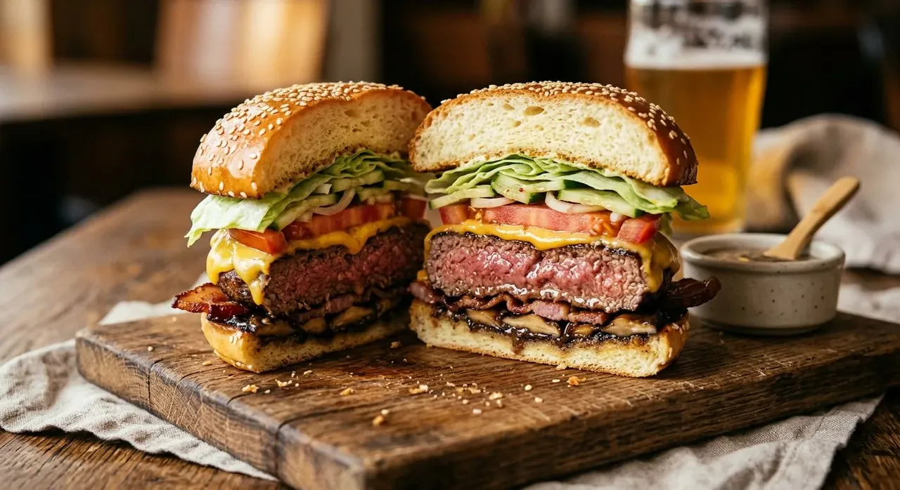

تجهیزات مهندسی مورد نیاز
ترازوی دیجیتال با دقت ۱ گرم (Digital Kitchen Scale)
ضروری برای اندازهگیری دقیق آرد، هیدراتاسیون خمیر، دوز دقیق آنزیم و تقسیم یکنواخت گوشت و چانهها.
همزن ایستاده با قلاب خمیر (Stand Mixer with Dough Hook)
برای توسعه شبکه گلوتن قوی و جذب تدریجی کره در خمیر غنیشده بدون گرم شدن خمیر با دست.
چرخگوشت خانگی با شبکه درشت ۶ میلیمتری (Meat Grinder with 1/4-inch Coarse Plate)
برای چرخ کردن گوشت نیمهمنجمد بدون له شدن و مالیده شدن چربی.
تابه چدنی سنگین ۱۲ اینچی یا گریل تخت فولاد کربنی (Cast-Iron Skillet / Carbon-Steel Griddle)
برای حفظ دمای بالا هنگام برخورد گوشت و ایجاد حداکثر واکنش مایارد (Maillard Reaction).
کاردک فلزی صلب بدون شیار با لبه تیز (Stiff Solid Metal Spatula / Bench Scraper) + درپوش گنبدی (Cheese Melting Dome)
کاردک صلب برای کوبیدن یکنواخت پتیها و تراشیدن ۱۰۰٪ پوسته کاراملی در نسخه Smash؛ و درپوش گنبدی (یا درِ قابلمه گود) برای حبس بخار لحظهای و ذوب کامل پنیر Cheddar بدون پخت بیشازحد گوشت.
۶ رینگ فلزی ۱۰ سانتیمتری (4-Inch English Muffin / Crumpet Rings)
برای هدایت رشد عمودی نانها در فر و فرم استاندارد رستورانی. اگر نداری، با نوارهای دولایه فویل آلومینیومی ضخیم به ارتفاع ۴ سانتیمتر و قطر ۱۰ سانتیمتر بساز.
ابزارهای دقیق تکمیلی
رنده Mandoline (برش کاغذی ۱ میلیمتری پیاز)، گوشتکوب برقی و لیوان بلند (Immersion Blender & Tall Cup برای امولسیون ۶۰ ثانیهای مایونز)، دماسنج دیجیتال نفوذی (Instant-Read Thermometer)، توری سیمی خنککننده (Wire Cooling Rack)، کاغذ روغنی بدون موم، پارچه تنظیف (Cheesecloth) و بطری اسپری ریزپاش.
آمادهسازی خمیر نان Hokkaido و تخمیر سرد
-
پخت پیشخمیر Tangzhong
در یک شیرجوش کوچک، ۲۰ گرم آرد نان، ۲۷ گرم آب و ۶۰ گرم شیر را روی حرارت سرد با همزن دستی مخلوط کن تا هیچ گلولهای نماند. روی حرارت متوسط بگذار و مداوم کف و دیوارهها را هم بزن (حدود ۲ تا ۳ دقیقه) تا دمای مخلوط به ۶۵ درجه سانتیگراد (149°F) برسد و مایع به خمیر نشاستهای غلیظ و براق تبدیل شود که رد همزن در آن بماند. فوراً به کاسه کوچکی منتقل کن، سلفون را مستقیم روی سطحش بچسبان تا پوسته نبندد و بگذار به دمای محیط (۲۱ تا ۲۴ درجه سانتیگراد / 70–75°F) برسد.
-
فعالسازی مخمر
۱۲۰ گرم شیر با دمای دقیق ۳۵ درجه سانتیگراد (95°F) را با ۹ گرم مخمر هم بزن و ۵ تا ۸ دقیقه استراحت بده تا سطح آن کاملاً کفآلود شود.
-
ترکیب مواد خشک و تر
در کاسه همزن ایستاده، ۳۲۰ گرم آرد نان، ۲۴ گرم شکر، ۷ گرم نمک و ۲ گرم پودر مالت دیاستاتیک را با همزن دستی مخلوط کن. قلاب خمیر را نصب کن و همزن را روی دور کند بگذار. مخلوط شیر و مخمر، ۱ تخممرغ کامل + ۱ زرده همزده، و تمام Tangzhong خنکشده را اضافه کن و ۴ دقیقه ورز بده تا خمیر منسجم شود.
-
تزریق تدریجی کره و تست پنجره (Windowpane Test)
دور همزن را روی متوسط-کم بگذار. ۴۲ گرم کره نرمشده را به ۳ تکه مساوی تقسیم کن و هر بار فقط یک تکه بینداز؛ صبر کن کاملاً جذب بافت خمیر شود و اثر چربی از دیواره کاسه پاک شود، سپس تکه بعدی را اضافه کن. پس از جذب کامل کره، ۶ تا ۸ دقیقه دیگر ورز بده تا خمیر کاملاً صاف، براق و کشسان شود و از دیواره کاسه جدا گردد (اگر تکهای از خمیر را بین انگشتان بکشی، بدون پاره شدن تا حد عبور نور نازک شود).
-
تخمیر اول و خواب سرد (Cold Retardation)
خمیر را روی سطح بدون آرد به شکل یک گوی سفت گرد کن، داخل کاسه کمی چربشده بگذار و روی آن را کیپ بپوشان. ۴۵ دقیقه در دمای محیط (۲۴°C / 75°F) استراحت بده تا پف اولیه شکل بگیرد؛ سپس کاسه را دقیقاً ۹۰ دقیقه داخل یخچال (۴°C / 39°F) بگذار تا خمیر سرد، خوشفرم و طعمدار شود.
خیارشور فوری ادویهدار و امولسیون سیر سیاه
-
آمادهسازی خیارشور فوری
ورقههای طولی خیار را همراه با سیر لهشده و شوید تازه داخل یک شیشه تمیز ۱ لیتری بچین. آب، سرکه سفید، نمک و شکر را همراه با کیسه پارچهای ادویهها در قابلمه کوچکی بریز و روی حرارت بالا به جوش بیاور. به محض قل زدن، حرارت را خاموش کن، ۱ دقیقه صبر کن تا عطر ادویهها آزاد شود، سپس مایع داغ و کیسه ادویه را روی خیارها بریز. پس از خنک شدن نسبی در دمای محیط (حدود ۲۰ دقیقه)، شیشه را داخل یخچال بگذار تا کاملاً سرد و ترد شود.
-
ساخت امولسیون پایه مایونز در ۶۰ ثانیه
زرده تخممرغ، Dijon Mustard، آب لیموترش، شکر، نمک و ۱۸۰ میلیلیتر روغن خنثی را داخل لیوان بلند گوشتکوب برقی بریز. تیغه گوشتکوب را کاملاً کف لیوان تکیه بده، روشن کن و ۱۵ ثانیه بدون حرکت نگه دار تا کف لیوان سفید و غلیظ شود؛ سپس به آرامی تیغه را بالا بیاور تا مایونز ظرف ۴۵ ثانیه کاملاً سفت و یکدست شود.
-
تکمیل امولسیون سیر سیاه و فلفل حلب
خمیر سیر سیاه لهشده، کچاپ، سرکه سیاه چینی (Chinkiang)، ۱۰ میلیلیتر از آبِ خنکشده خیارشور خانگی، سس Worcestershire، پرک فلفل حلب (Aleppo Pepper)، پیازچه ریز خردشده و فلفل سیاه را به مایونز اضافه کن و کاملاً هم بزن. روی سس را بپوشان و حداقل ۱ ساعت در یخچال استراحت بده.
چانهگیری، استراحت در رینگ و پخت نانها
-
چانهگیری دقیق با ترازو
خمیر سرد را از یخچال خارج کن و با فشار دست گاز اضافیاش را بگیر. کل خمیر (حدود ۶۸۵ گرم) را به ۶ قسمت کاملاً مساوی (هر چانه ۱۱۲ تا ۱۱۴ گرم / ۴ اونس) تقسیم کن. لبههای هر تکه را به سمت مرکز جمع کن، درز زیرین را ببند و روی سطح بدون آرد زیر گودی کف دست به شکل دایرهای بچرخان تا ۶ گوی کاملاً صاف و پرکشش بسازی.
-
استراحت دوم داخل رینگ
سینی فر را با کاغذ روغنی بپوشان و ۶ رینگ ۱۰ سانتیمتری چربشده را با فاصله بچین. هر چانه را مرکز رینگ بگذار و با کف دست به آرامی کمی پهن کن. روی سینی را با سینی گود وارونه یا سلفون چربشده بپوشان و ۴۵ تا ۶۰ دقیقه در دمای محیط استراحت بده تا حجم چانهها دو برابر شود و دیوارههای رینگ را پر کنند.
-
پخت تا دمای مغز ۸۸–۹۰°C و براقسازی کرهای
فر را از قبل روی ۱۹۰ درجه سانتیگراد (375°F) گرم کن. مخلوط تخممرغ و آبِ صافشده را با بطری اسپری یک لایه بسیار نازک روی گنبد خمیرها اسپری کن (یا با قلمموی سیلیکونی بسیار نرم بمال) و بلافاصله کنجد سفید بپاش. در طبقه وسط فر ۱۵ تا ۱۷ دقیقه بپز تا رویه قهوهای-طلایی عمیق شود و دمای مرکز نان به ۸۸ تا ۹۰ درجه سانتیگراد (190–195°F) برسد. به محض خروج از فر، ۲۰ گرم کره ذوبشده روی سطح نانهای داغ بکش، رینگها را جدا کن و نانها را روی توری سیمی خنک کن تا کفشان عرق نکند.
ایستگاه انتخاب مسیر پخت گوشت (ادامه از فاز ۴ تا سرو نهایی)
یکی از دو پروتکل زیر را انتخاب کن تا ادامه مراحل بر اساس آن نمایش داده شودچرخ سرد گوشت سهگانه ۷۵/۲۵ و آمادهسازی مخلفات
-
انجماد سطحی گوشت و چرخگوشت
مکعبهای ۲٫۵ سانتیمتری دنده (۳۸۵g)، سردست (۳۴۰g) و راسته (۱۷۵g) را در یک سینی پهن کن و همراه با کلگی، تیغه و شبکه ۶ میلیمتری چرخگوشت، دقیقاً ۲۵ تا ۳۰ دقیقه در فریزر بگذار تا لبههای بیرونی سفت و نیمهمنجمد شوند (۰°C / 32°F)، اما مغزشان سنگ نشود.
-
چرخ تکمرحلهای و وزنکشی آزاد (بدون نمک و بدون ورز!)
قطعات نیمهمنجمد را مخلوط کن و فقط یک بار از چرخگوشت رد کن. رشتههای خارجشده را بههیچوجه ورز نده و بدون نمک زدن، با ملایمت به ۱۲ گلوله ۷۲ تا ۷۵ گرمی (2.5 oz) تقسیم کن (فقط در حدی گرد کن که فرم کروی بگیرد و هوای بین رشتهها بماند). گلولهها را تا لحظه پخت در یخچال نگه دار.
-
برشته کردن Bacon صاف در فر
فر را روی ۲۰۰ درجه سانتیگراد (400°F) بگذار. ۱۲ ورق Bacon را روی توری سیمی سوار بر سینی فر بچین و ۱۸ تا ۲۲ دقیقه بپز تا چربی سفید کاملاً ذوب و شفاف شود و ورقهها کاملاً ترد و صاف شوند؛ سپس روی دستمال کاغذی بگذار.
-
سرخ کردن استیکی قارچ Shiitake
تابه چدنی را روی حرارت متوسط-بالا کاملاً داغ کن و ۱ قاشق غذاخوری روغن گیاهی بریز. نوارهای Shiitake را در یک لایه باز کف تابه بچین و تا ۳ دقیقه اول مطلقاً نمک نزن و هم نزن تا یک طرف قارچها قهوهای تیره و برشته شود. برگردان، ۲ دقیقه دیگر سرخ کن، حرارت را کم کن، نمک Kosher، فلفل سیاه و ۱۴ گرم کره اضافه کن، ۳۰ ثانیه تفت بده و کنار بگذار.
-
پیاز حمام یخ و گوجهفرنگی آبگیریشده
رشتههای ۱ میلیمتری پیاز سفید را دقیقاً ۲ دقیقه در کاسه آب و یخ بریز، آبکش کن و لای چند لایه حوله کاغذی فشار بده تا صددرصد خشک شوند؛ به ۶ کپه کوچک تقسیم کن. ۶ دیسک ۸ میلیمتری گوجهفرنگی را روی توری سیمی بچین، دو طرفشان نمک Kosher بپاش و ۱۵ دقیقه صبر کن تا آب اضافیشان خارج شود؛ پیش از مونتاژ با دستمال کاغذی خشک کن.
-
تُست کرهای نانها (سد عایق رطوبت)
نانهای خنکشده را افقی از وسط ببر، سطح داخلی هر دو نیمه را از لبه تا لبه با کره نرم بپوشان و روی تابه با حرارت متوسط ۶۰ تا ۹۰ ثانیه برشته کن تا حلقه طلایی-قهوهای ترد و یکدستی بسازد.
پخت پتیهای Smash و ذوب بخاری پنیر دوگانه
-
رساندن چدن به نقطه دود
هود آشپزخانه را روی قویترین دور روشن کن. تابه چدنی خشک (بدون هیچ روغن اضافه) را روی حرارت بالا بگذار تا به دمای ۲۴۵ تا ۲۶۰ درجه سانتیگراد (475–500°F) برسد و دود ملایمی بلند شود.
-
اسمش پتیها (پتی پیازی + پتی خالص)
دو گلوله ۷۲ گرمی سرد را با فاصله ۱۰ سانتیمتر روی چدن خشک بگذار. بلافاصله یک کپه از رشتههای خشک پیاز را روی گلوله اول بریز و گلوله دوم را ساده نگه دار. یک مربع کاغذ روغنی روی گلوله اول بگذار و با کف کاردک فلزی صلب، با فشار عمودی قاطع گوشت و پیاز را به ضخامت ۳ میلیمتر (1/8-inch) پهن کن و فشار را ۵ ثانیه کامل نگه دار تا پروتئین گوشت به منافذ چدن بچسبد؛ کاغذ را جدا کن و فوراً همین کار را برای گلوله دوم انجام بده. سطح بالایی هر دو پتی را سخاوتمندانه نمک Kosher و فلفل سیاه بپاش.
-
پوسته توری (Lacy Edges) و برگرداندن (۶۰ تا ۷۵ ثانیه)
بدون دست زدن صبر کن تا چربی لبهها قل بزند، لبهها کاملاً قهوهای تیره و توری شوند و رنگ پخت از زیر بالا بیاید. لبه تیز کاردک را با زاویه تند چسبیده به کف تابه قاطعانه بتراش تا ۱۰۰٪ پوسته طلایی همراه گوشت جدا شود و فوراً برگردان تا پیازهای پتی اول مستقیم روی چدن داغ در چربی گوشت کاراملی شوند.
-
ذوب بخاری پنیر دوگانه (۳۰ تا ۴۵ ثانیه)
بلافاصله روی پتی اول (پیازی) ۱ ورق پنیر آمریکایی زرد و روی پتی دوم ۱ ورق Aged Sharp Cheddar (یا Smoked Provolone) بگذار. ۵ میلیلیتر (۱ ق.چ) آب کنار تابه بریز و درپوش گنبدی را فوراً ۲۰ تا ۳۰ ثانیه بگذار تا بخار داغ پنیرها را ذوب کند. پتی دوم (چداردار) را دقیقاً روی پتی اول سوار کن و فوراً خارج کن.
معماری لایهچینی نهایی Double Smash (از پایین به بالا)
۱. کف نان (Bottom Bun): تُستشده با کره، رو به بالا.
۲. عایق سس زیرین: ۱ قاشق غذاخوری پر (۱۵ گرم) از امولسیون سیر سیاه و فلفل حلب، یکنواخت از لبه تا لبه.
۳. لایه اسیدی و ترد زیرین: ۳ تا ۴ نوار طولی از خیارشور فوری ادویهدار (آبگیریشده با دستمال)، چیدهشده به صورت موازی.
۴. برج دوگانه گوشت و پنیر: پشته داغ پتی اول (پیاز کاراملی + پنیر آمریکایی) و روی آن پتی دوم (پوسته برشته خالص + پنیر چدار/پروولون ذوبشده).
۵. تیرکهای ترد دودی: ۲ ورق Bacon دودی صاف و ترد به صورت ضربدری (X) روی پنیر ذوبشده تا درون پنیر قفل شوند و سر نخورند.
۶. تاج اومامی گرم: ۱٫۵ قاشق غذاخوری از نوارهای قارچ Shiitake برشتهشده بین شیارهای بیکن.
۷. طراوت سرد نمکخورده: ۱ اسلایس ضخیم گوجهفرنگی Heirloom آبگیریشده + اندکی فلفل سیاه تازه.
۸. سقف نان (Crown Bun): آغشته به ۱ قاشق غذاخوری دیگر (۱۵ گرم) امولسیون سیر سیاه؛ روی گوجه بگذار، ۱ ثانیه فشار ملایم با کف دست بده تا لایهها قفل شوند و فوراً داغ سرو کن.
استریل سطحی، چرخ سرد و تکنیک رشتههای عمودی Heston Blumenthal

-
بلانچ ۱۰ ثانیهای برای ایمنی کامل پخت Medium-Rare / Medium
پیش از خرد کردن تکههای درسته گوشت، یک قابلمه آب را به جوش بیاور. تکههای سالم سردست (۴۸۰g)، دنده (۴۲۰g) و راسته (۳۰۰g) را با انبر فقط به مدت ۱۰ ثانیه داخل آب جوش بزن، فوراً خارج کن و با حوله کاغذی خشک کن؛ این کار بدون پختن گوشت، باکتریهای سطحی را از بین میبرد تا پخت مرکز برگر در دمای ۵۶–۵۷°C کاملاً ایمن باشد (ThermoWorks). سپس گوشتها را به مکعبهای ۲٫۵ سانتیمتری خرد کن و همراه تیغه و شبکه درشت (۶ میلیمتری) چرخگوشت، ۳۰ دقیقه در فریزر (۰°C / 32°F) بگذار.
-
چرخ رشتهای و رول کردن در راستای موازی (تکنیک Heston Blumenthal)
یک لایه بلند سلفون جلوی دهانه چرخگوشت پهن کن. مکعبهای نیمهمنجمد را مخلوط و چرخ کن؛ همزمان که رشتههای بلند گوشت شبیه اسپاگتی بیرون میآیند، آنها را همراستا و موازی کنار هم روی سلفون بخوابان تا استوانهای بلند به قطر ۱۰٫۵ سانتیمتر (4.25 inches) شکل بگیرد (به هیچ عنوان گوشت را با دست مچاله نکن و نمک نزن!). سلفون را دور رشتههای موازی بپیچ و دو سر آن را مثل شکلات بپیچان تا استوانهای منسجم ولی متخلخل بسازی. استوانه را ۲۵ دقیقه در فریزر بگذار تا خودش را بگیرد.
-
برش استیکی ۲۰۰ گرمی عمود بر الیاف
سلفون را باز کن و استوانه گوشت را با کارد تیز سرآشپز، عمود بر جهت رشتهها، به ۶ دیسک ضخیم ۲٫۵ سانتیمتری (1-inch thick — هر کدام دقیقاً ۲۰۰ گرم / ۷ اونس) ببر تا رشتههای گوشت دقیقاً مثل فیله استیک عمود بر سطح برگر بایستند! مرکز هر پتی را با شست حدود ۵ میلیمتر گود کن تا هنگام پخت باد نکند.
-
آمادهسازی مخلفات
Bacon ترد در فر ۲۰۰°C (۱۸–۲۲ دقیقه)، قارچ Shiitake برشته با ۱۴g کره، گوجه نمکخورده آبگیریشده و تُست کرهای نانها را دقیقاً طبق مراحل استاندارد آماده کن. رشتههای ۱ میلیمتری پیاز سفید را پس از ۲ دقیقه حمام آب و یخ و خشک کردن کامل، یا بهصورت خام و ترد کنار بگذار، یا در ۱ قاشق چربی باقیمانده از بیکن روی حرارت ملایم ۱۰ دقیقه تفت بده تا طلایی و شیرین (Caramelized) شوند.
پخت معکوس در فر ملایم + برشتهسازی کرهای (Reverse-Sear)
-
پخت ملایم یکنواخت در فر (حذف کامل نوار خاکستری خشک)
فر را روی دمای بسیار ملایم ۹۵ درجه سانتیگراد (200°F) تنظیم کن (Serious Eats). هر دو طرف و لبههای کناری هر ۶ پتی ۲۰۰ گرمی را درست پیش از ورود به فر سخاوتمندانه نمک Kosher درشت و فلفل سیاه بزن و روی توری سیمی سوار بر سینی فر بچین. طبقه وسط فر ۱۸ تا ۲۵ دقیقه حرارت بده تا دماسنج دیجیتال در مرکز دقیق پتی دمای زیر را نشان دهد:
- برای Medium-Rare (قرمز-صورتی بسیار آبدار): خروج از فر در دمای ۴۹°C (120°F) — دمای نهایی پس از سرخ شدن: ۵۴°C (130°F).
- برای Medium طلایی سرآشپز (صورتی گرم — پیشنهادیترین حالت برای این ترکیب گوشت): خروج از فر در دمای ۵۲ تا ۵۳°C (126–128°F) — دمای نهایی پس از سرخ شدن: ۵۷°C (135°F)، نقطهای که ۱۰۰٪ چربی دنده ذوب شده ولی آب گوشت بیرون نزده است.
-
شوک حرارتی در چدن ۲۵۰°C و قاشقریزی کره سیر (Arrosé Basting)
تابه چدنی سنگین را روی حرارت بسیار بالا تا ۲۵۰ درجه سانتیگراد (485°F) داغ کن و ۳۰ میلیلیتر روغن آووکادو/کلزا بریز تا به نقطه دود برسد. پتیهای گرم را با احتیاط بگذار (هر بار ۲ یا ۳ عدد) و ۴۵ تا ۶۰ ثانیه بدون حرکت سرخ کن تا پوسته قهوهای تیره استیکی شکل بگیرد (هرگز روی پتی فشار نیاور!). برگردان؛ بلافاصله ۴۲ گرم کره، ۳ حبه سیر با پوست لهشده و ۴ شاخه آویشن تازه را کنار تابه بینداز، تابه را کمی کج کن و ۲۰ ثانیه کره کفآلود داغ را پیاپی با قاشق روی پتیها بریز (Basting). بلافاصله روی هر پتی ۱ ورق پنیر آمریکایی زرد + ۱ ورق Aged Sharp Cheddar بگذار، ۱ ق.چ آب کنار تابه بریز و درپوش گنبدی را ۲۰ تا ۲۵ ثانیه بگذار تا پنیرها کاملاً ذوب شوند.
-
استراحت حیاتی ۴ دقیقهای (قفل کردن عصاره داخل گوشت)
پتیهای آماده را دقیقاً ۴ دقیقه روی توری سیمی استراحت بده و مطلقاً بلافاصله لای نان نگذار (Mental Floss Chef Guide). در این ۴ دقیقه فشار بخار مرکز گوشت فروکش میکند و تمام عصاره داغ دوباره جذب فضای بین رشتههای عمودی میشود تا به جای ریختن در بشقاب، هنگام گاز زدن در دهان آزاد شود.
معماری لایهچینی ضدآب (مخصوص پتی ضخیم پرآب)
۱. کف نان تُستشده با کره
۲. عایق سس زیرین: ۱ قاشق غذاخوری پر امولسیون سیر سیاه و فلفل حلب (پوشش کامل از لبه تا لبه).
۳. سپر ضدآب: ۱ برگ تاخورده کاهوی ترد Iceberg (مانع نفوذ عصاره داغ فراوان گوشت به بافت نان میشود).
۴. لایه اسیدی ترد: ۳ تا ۴ نوار طولی خیارشور فوری ادویهدار.
۵. قلب استیکی: پتی ضخیم ۲۰۰ گرمی آبدار با لایه دوگانه پنیر آمریکایی و چدار ذوبشده.
۶. تاج دود و اومامی: ۲ ورق Bacon دودی ترد (ضربدری) + نوارهای قارچ Shiitake برشته + پیاز (خام ترد آبیخ یا کاراملی در چربی بیکن).
۷. طراوت نمکخورده: ۱ اسلایس گوجهفرنگی Heirloom نمکخورده و خشکشده.
۸. سقف نان: آغشته به ۱ قاشق غذاخوری امولسیون سیر سیاه.
نکات کلیدی سرآشپز و مبانی علمی هر دو نسخه
-
همافزایی دوگانه Tangzhong + آنزیم مالت
پیشخمیر Tangzhong با ژلاتینهکردن نشاسته پیش از پخت، آب آزاد خمیر را به صورت ژل محبوس میکند تا نان خشک نشود؛ همزمان مالت دیاستاتیک نشاستههای بلند را به مالتوز و دکسترینهای کوتاه میشکند که غذای مخمر را تأمین میکنند، رنگ پوسته را در ۱۹۰°C کهربایی میکنند و بیات شدن نشاسته (Starch Retrogradation) را به تعویق میاندازند.
-
چرخش علمی گوشت سهگانه و دمای انجماد سطحی (۰°C / 32°F)
دنده (Short Rib) طعمی آجیلی، کرهای و سرشار از اومامی دارد اما بهتنهایی سنگین است؛ سردست (Chuck) پیوند کلاژنی کلاسیک برگر را میسازد و راسته (Sirloin) طعم خالص و معدنی گوشت گاو را تثبیت میکند (Serious Eats Burger Lab). اگر گوشت یا تیغه چرخگوشت گرم باشد، چربی گاو به جای بریده شدن، ذوب و دور ذرات پروتئین مالیده میشود (Fat Smearing) و برگر بافتی لاستیکی شبیه سوسیس پیدا میکند.
-
چرا نمک زدن داخل مایه گوشت خام ممنوع است؟
پاشیدن نمک داخل گوشت چرخکرده خام باعث حل شدن پروتئین میوزین (Myosin) میشود که رشتههای گوشت را به شبکهای چسبناک و متراکم شبیه سوسیس پیوند میدهد (Serious Eats Smashed Burgers). نمک زدن صرفاً روی سطح بیرونی پتی، داخل برگر را ترد، متخلخل و آبدار نگه میدارد.
-
شیمی ذوب پنیر دوگانه و اثر ضربی ۸ برابری اومامی
پنیر چدار کهنه در حرارت مستقیم دوفاز میشود و روغن پس میدهد، اما پنیر آمریکایی حاوی امولسیونکننده سیترات سدیم (Sodium Citrate) است؛ ترکیب این دو زیر بخار آب، پروتئین کازئین را به امولسیونی کرمی و پایدار تبدیل میکند. همزمان، اینوزینات (IMP) گوشت گاو و بیکن با گوانیلات (GMP) و گلوتامات آزاد قارچ Shiitake، سیر سیاه تخمیرشده و گوجه نمکخورده همافزایی نمایی ایجاد کرده و شدت اومامی را چندین برابر میکند.
-
چرا نسخه دوم رکورد آبداری را در علم آشپزی میشکند؟ (کانالهای عمودی + ۵۷°C)
وقتی در روش Heston Blumenthal رشتههای گوشت عمودی برش میخورند، دندان هنگام گاز زدن در امتداد الیاف حرکت میکند (بافتی به نرمی کره بدون جویدن کشسان) و شیارهای میکروسکوپی بین رشتهها مثل اسفنج عصاره گوشت را نگه میدارند. در پخت معکوس ۹۵°C نیز برخلاف تابه معمولی، کل حجم ۲۰۰ گرمی پتی یکنواخت به دمای ۵۷°C (135°F) — نقطه ذوب کامل چربی دنده بدون خروج آب — میرسد و سطح خشکشدهاش در ۴۵ ثانیه روی چدن داغ برشته میشود (Serious Eats Thick Burgers).